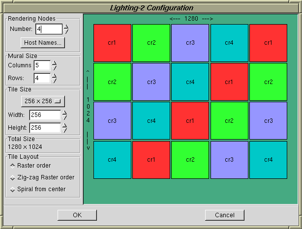

The image reassembly template is used to setup a configuration in which the tilesort SPU generates N tiles which are reassembled into a downstream window. This template can also be used to configure hardware image assembly (such as with Lightning-2).
When you create an image reassembly template you'll be prompted to enter the number of application nodes, number of rendering nodes and the size of the display (width and height in tiles).
Clicking on the Edit Template button will open the image reassembly editor, shown here:

The editor is similar to the tilesort editor and has many of the same controls.
The mural is depicted as colored tiles. The tiles are labeled and colored to indicate the host node for each tile's server.
Good load balancing is essential for this configuration. By observing the colors of the tiles one can get a feel for how well the image space is subdivided among the servers. You want to have an even spatial distribution of servers for good load balancing.
Specify the number and names of the rendering servers in your cluster. Do this with the controls in the upper-left corner of the window.
The Fixed or Variable Size Image radio buttons control whether the recombined image will be of a fixed size or variable size. If it's a variable size you can choose to either fix the number of rows and columns or the tile size. If the rows and columns are fixed then tile tiles size will be free to change. Conversely, if the tile size is fixed, then the number of rows and columns will be free to change.
The total image size will be displayed below only if you choose the fixed size option.
The Image Tiles controls set the number of rows and columns of tiles in the image mural. This control will be disabled if you chose the variable tile size above.
The Tile Size controls set the individual tile size. You can choose a predefined tile size or enter any custom size. This control will be disabled if you chose the variable tile size option above.
The Tile Layout control determines how the tiles within the mural are
laid out.
Raster order uses a simple top-to-bottom, left-to-right ordering.
Zig-zag order is like raster order except the left-to-right and
right-to-left order is used for the even and odd rows, respectively.
Spiral order starts laying out tiles in the center of the mural, and
grows in an outward, clockwise spiral.
As mentioned above, it's important to choose a good tile layout for the sake of load balancing.
There are three options for final image reassembly:
Here are some other things which you'll probably want to pay attention to.
Readback SPU window geometry: You'll typically want to set the fullscreen option so that each server has maximum window space for its tiles.
Note that other SPU options, such as resizable will be set automatically when you use the controls described above in steps 1 - 5.
When you save your image reassembly configuration to a file (such as
myreassemble.conf) you'll have a stand-alone
configuration script that you can run as follows:
python myreassemble.conf
This configuration script will also accept the following optional command-line arguments:
-c cols specifies the number of tile columns
-r rows specifies the number of tile rows
-w width specifies the tile width in pixels
-h height specifies the tile height in pixels
-s servers a comma-separated list of hosts for
the tile servers
-l layout specifies layout method: 0 = raster order,
1 = zig-zag order, 2 = spiral from center.
-d dynamic Dynamic window resize: 0 = fixed size,
1 = variable rows and columns, 2 = variable tile size.
You can also specify the name of the program to run as the last argument.
For example:
python myreassemble.conf -c2 -r2 -d2 -s "cr1,cr2,cr3" atlantis
Will run atlantis on a 2 column by 2 row mural using the servers cr1, cr2, and cr3. Dynamic window resizing will be done by resizing the tiles.